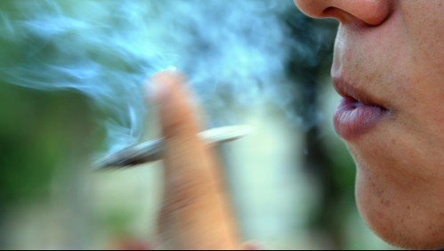

"Un porro por una vacuna": ofrecen marihuana gratis en Nueva York para los inoculados
Autor │ Fecha │ Categoría │ Ubicación

"Un porro por una vacuna": militantes de la legalización de la marihuana causaron sensación el martes en Manhattan al ofrecer un porro a las personas que recibieron al menos la primera dosis de la vacuna contra el Covid-19.
La idea era celebrar la legalización del cannabis recreativo en el estado de Nueva York a fines de marzo y de apoyar la campaña de vacunación este 20 de abril ("4/20" en inglés, cifras que se convirtieron en un código de la marihuana) y día festivo oficioso del cannabis.
"Es la primera vez que podemos sentarnos y distribuir porros legalmente", explicó Michael O'Malley, uno de los organizadores, al distribuir porros preparados con anticipación por voluntarios.
"Apoyamos el esfuerzo de vacunación del gobierno federal, e intentamos también que legalicen el cannabis a nivel federal", dijo.
"Todo el mundo debería vacunarse"
Desde el inicio de la distribución, que comenzó hacia las 11:00 hora local y se extendió durante unas cinco horas, se formó una cola de 50 personas, jóvenes y no tanto, en la plaza de Union Square, a pasos del Greenwich Village.
La espera fue corta: una decena de minutos al sol, suficiente para mostrar el carné de vacunación en papel o en el teléfono, y de dar la dirección de correo electrónico.
Sarah Overholt, de 38 años, salió con dos porros en el bolsillo tras mostrar su carné de vacunación y el de su madre, de 70 años.
Para Overholt, la marihuana y la vacuna son igual de indispensables.
"Fumo todos los días, y eso me convierte en una mejor persona, créeme", dijo sonriendo.
En cuanto a la vacuna, "todo el mundo debería vacunarse, no debería ser necesaria la hierba para convencer a las personas de hacerlo, pero si funciona, tanto mejor", añadió esta mujer que recibió su primera dosis de la vacuna el 25 de marzo y aguarda la segunda este jueves.
Alex Zerbe, de 24 años, un corredor de bolsa que llegó a la plaza desde su oficina, coincide. Ya recibió sus dos dosis, y se fuma un porro "una o dos veces al día. No precisa que le regalen un porro, puede conseguirlo de otra manera, pero la idea de que se lo ofrezcan por estar vacunado "es simplemente chévere", dijo.
En la primera media hora se distribuyeron entre 150 y 200 porros, de un total de 1.500 preparados por los voluntarios.
Diversas marcas estadounidenses, sobre todo en la industria de la alimentación, lanzaron promociones ligadas a la vacuna en las últimas semanas: buñuelos, perros calientes o cervezas son ofrecidos en diversos lugares del país a las personas que prueben haberse vacunado contra el covid-19.